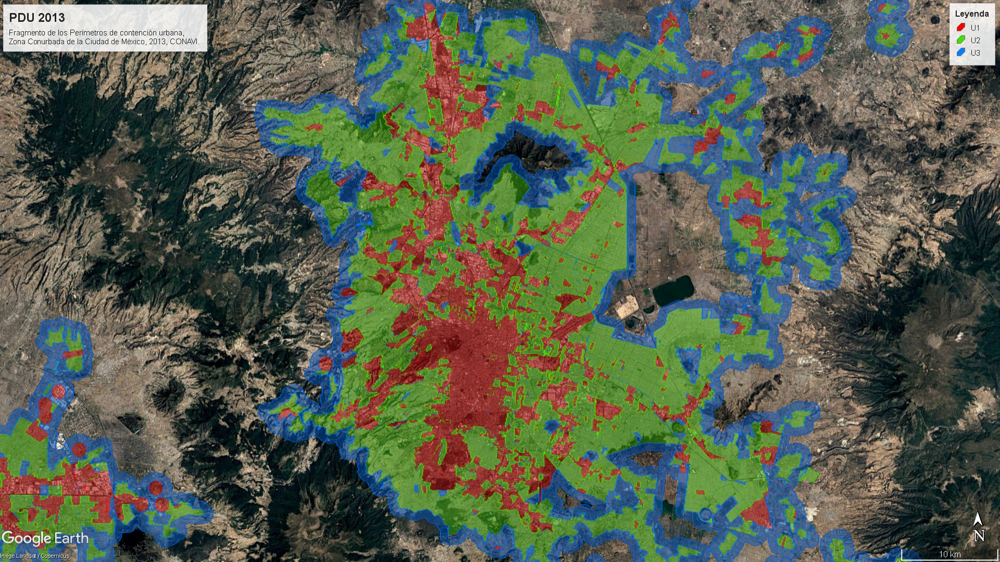

Algunos trabajos...
Comisión Nacional para el Conocimiento y Uso de la Biodiversidad (CONABIO)

Comisión Nacional de Vivienda (CONAVI)
Perímetros de Contención Urbana, 2013
Descargable
Se participó de manera activa en la elaboración de los Perímetros de Contención Urbana (PCU) y en la validación de las reservas territoriales. Los PCU constituyen un instrumento de planeación territorial en México cuyo objetivo es regular y ordenar el crecimiento de las ciudades, delimitando hasta dónde puede expandirse el área urbana y bajo qué condiciones. Su propósito principal es evitar la expansión descontrolada, promover un crecimiento compacto y garantizar que el desarrollo habitacional se lleve a cabo en zonas con acceso a empleo, servicios e infraestructura adecuada. En esta sección se presentan los PCU de 2013, en cuya formulación se tuvo participación directa. En actualizaciones posteriores ya no se colaboró, pues los PCU vigentes pertenecen a SEDATU.
Perímetro de Contención Urbana
CDMX

Secretaría de Desarollo Económico de la Ciudad de México (SEDECO)
Oficina Virtual de Información Económica
La Oficina Virtual de Información Económica (OVIE) es una plataforma gratuita de información geográfica que concentra datos económicos, sociodemográficos y territoriales de forma sencilla y accesible. Su finalidad es apoyar a emprendedores, inversionistas y ciudadanos interesados en conocer mejor el entorno en el que se desarrollan. A través de la OVIE se pueden consultar indicadores clave que facilitan la toma de decisiones y la planeación de proyectos. La herramienta combina mapas y estadísticas en un solo espacio digital, lo que permite visualizar la información de manera clara y práctica. Además, promueve la transparencia y democratización del acceso a los datos económicos, fortaleciendo así la competitividad regional. En esencia, la OVIE se convierte en un recurso estratégico para analizar la realidad económica y social de la Ciudad de México, brindando orientación tanto a nivel individual como colectivo.
Análisis Especializados, OVIE
A partir de los datos generados por la Oficina Virtual de Información Económica (OVIE), se llevaron a cabo diversos análisis y estadísticas sobre problemáticas relevantes para la ciudad. Entre ellos destaca este trabajo de Marginación Urbana, elaborado con base en la información proporcionada por la plataforma, que permitió identificar y representar territorialmente las desigualdades socioeconómicas en el entorno urbano.
Marginalidad OVIEInstituto de Atención y Prevención de las Adicciones en la Ciudad de México (IAPA)
Densidad de Carpetas de Investigación de Narcomenudeo y Violencia Intrafamiliar
El proyecto integra tanto la visualización dinámica como los mapas anuales que conforman la serie temporal, permitiendo observar la evolución y la distribución territorial de ambas problemáticas en la Ciudad de México. Esta representación facilita identificar tendencias, concentraciones y variaciones a lo largo de los años, brindando una herramienta útil para comprender la magnitud del fenómeno y apoyar la toma de decisiones en materia de prevención y atención.

Infografías sobre las distintas sustancias psicotrópicas
Además de los mapas, se elaboraron diversas infografías para el Observatorio de Sustancias Psicotrópicas, en las que se presentan datos y estadísticas sobre distintas sustancias, con el objetivo de comunicar la información de manera clara, accesible y visualmente atractiva.
Factores de Riesgo
Dentro de las actividades realizadas en el Instituto de Atención y Prevención de las Adicciones de la Ciudad de México (IAPA), entre 2019 y 2023 se llevó a cabo el Diagnóstico de Factores de Riesgo en cada una de las alcaldías de la Ciudad de México. Este proyecto representó uno de los trabajos más robustos del periodo, ya que, siguiendo las instrucciones de la entonces jefa de gobierno Claudia Sheinbaum, se analizaron 315 colonias prioritarias junto con la totalidad de las escuelas públicas de educación básica ubicadas en dichas colonias. En conjunto, esto dio como resultado la elaboración de más de 1,000 mapas anuales, que documentaron de manera detallada los contextos de riesgo y vulnerabilidad en el territorio.

Programa de Ordenamiento Territorial de la Zona Metropolitana Tlaxcala Apizaco
Se prestaron servicios tanto en la elaboración de diversos capítulos como en la generación de la cartografía digital correspondiente a la Actualización del Programa de Ordenamiento Territorial de la Zona Metropolitana Tlaxcala - Apizaco. Para la construcción de este Programa se llevaron a cabo reuniones y mesas de trabajo con autoridades y actores clave, lo que permitió integrar distintas perspectivas en el proceso. Se desempeñó un papel central en la gestión y producción de la cartografía digital, entregada posteriormente a SEDATU, institución encargada de incorporarla al Sistema de Información Territorial y Urbano (SITU), donde actualmente se encuentra disponible para consulta pública.

Programa de Desarrollo Urbano del Centro de Población de Bahías de Huatulco
Se participó en la elaboración del Programa de Desarrollo del Centro de Población de Bahías de Huatulco, un instrumento clave para orientar el crecimiento urbano y turístico en esta zona de alto valor ambiental y estratégico. Como parte del proceso, se desarrolló la cartografía digital necesaria para sustentar los diagnósticos y propuestas, además de colaborar en reuniones técnicas y mesas de trabajo con autoridades y actores locales. El trabajo realizado permitió integrar la información territorial en un documento que buscó equilibrar la planeación urbana con la conservación ambiental, estableciendo lineamientos para un desarrollo ordenado, sostenible y con acceso a servicios e infraestructura.


Impacto Social del redesarrollo del puerto de cruceros en Mahahual
Se participó en el redesarrollo del puerto de cruceros en Mahahual, mediante la elaboración de cartografía y el procesamiento de información geoespacial orientada al levantamiento de datos sociales en la zona de influencia del proyecto. Además, se colaboró en la redacción de los apartados técnicos relacionados con la descripción geográfica y el análisis del contexto económico, aportando insumos clave para comprender las dinámicas territoriales y las implicaciones del desarrollo turístico en la región.


Evaluación del impacto social para grandes Construcciones de la Ciudad de México
Se participó en la elaboración de los capítulos 1 al 7 de dos Evaluaciones de Impacto Social (EvIS) para Grandes Construcciones, contribuyendo de manera activa en la redacción de contenidos técnicos, la generación de cartografía temática y el análisis de proyecciones espaciales vinculadas con el entorno social y territorial. Este trabajo permitió integrar información clave para valorar los posibles impactos de los proyectos y fortalecer la planeación con una perspectiva integral y territorial.